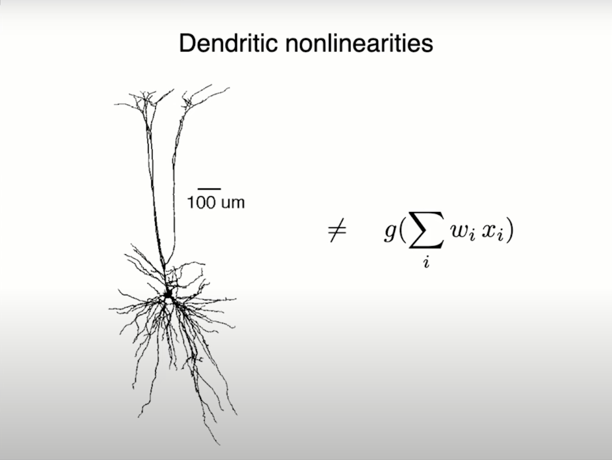
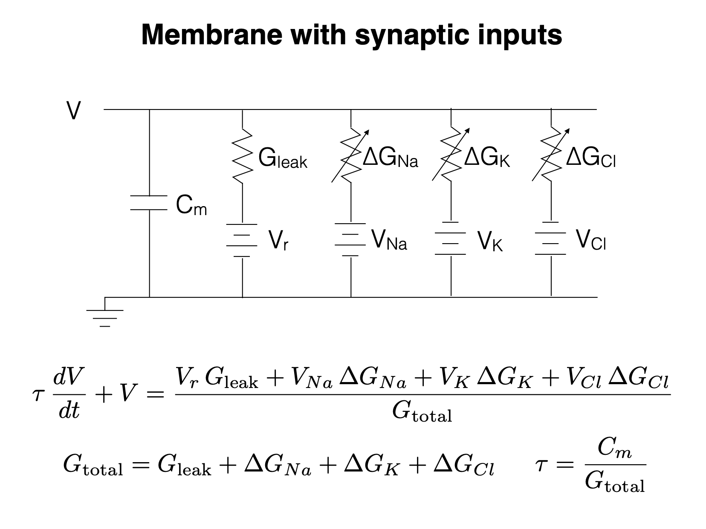

Introduction
For those who don't know me, you can check out my research page to see who I am and what my research pertains to. The TLDR is that I am currently a PhD student at UC Berkeley studying computational neuroscience. My research focuses on the visual cortex. I am hoping that my blog posts can serve as a starting point for folks with a computational/EECS background who are interested in computational neuroscience and neuroAI (side note: NeuroAI is a recent term that seems to be a rebranding of the field of computational neuroscience in order to appeal to the current AI hype).
I wanted to review this course in particular over all the other grad courses I have taken at Berkeley because this course is "THE" NeuroAI course on campus. The course website is up at the time of this blog post publication and most of the lectures are posted along with the slides, readings and coding assignments. In theory, you could take this course virtually at your own pace, if you are so inclined. Additionally, Galen Chuang, the course's TA and a member in Bruno Olshausen's lab has done a fantastic job of documenting each class on her blog.
I want to give a forewarning that this review of VS 265 is in no way an attempt to give an unbiased or objective review. I have a very biased perspective. I am in Jacob Yates' lab and our group is called the Active Vision and Neural Computation lab. The course is called Neural Computation. I also rotated with Bruno Olshausen during my first year as a PhD student, I regularly attend his lab meetings and the Redwood Meetings. Bruno was on my qualifying exam committee and is on my thesis committee.
Course logistics
With that out of the way, let's talk about the easy stuff first: course logistics. I took the course in Fall 2024. The course is taught by Bruno Olshausen and was TA'ed by Galen Chuang. Lectures were on Tuesdays and Thursdays from 3:30-5pm in Warren 205A, the same room where Redwood Meeting is also held. One of my only complaints about the course was that it was quite crowded at the beginning of semester to the point where it was hard to find seating. However, as the weeks went by, fewer folks showed up to lecture and seating was no longer a problem. In the end, there were around 50 students enrolled in the course (less than this number showed up to lecture towards the end). Most of the lectures were recorded via zoom and posted after the lecture, but a couple were missed due to technical issues. The course grading is split into three categories: problem sets (60%), final project (30%), and class participation (10%).
One note about grading: as with most graduate courses, it's not difficult to get the grade you want (in fact in Fall 2022 no one got below an A- source). It's not like an undergraduate course where they expect a certain level of proficiency per topic. There are no exams at all. It's one of those courses where you get out what you put in. An example of this is with the readings. The course website lists a bunch of papers, articles, and textbook chapters that pair with each of the lectures. I don't think anyone did all the readings in the course. In fact, I think most students barely did any of the readings. And that was completely fine - you can sparingly do the readings and still get an A in the course if you want. However, I do think it's a shame if a student doesn't engage in any of the readings. I personally read the papers I found relevant to my work and the papers which were required in order to sufficiently finish the homework assignments.
The last point to make about the course logistics is the student body. The course is officially offered through the Vision Science department. However, funnily enough, I was the only vision science student in the course. The course had a very intellectually diverse set of graduate students and undergraduates. There were also other professors that sat in on the lectures. The common denominator seemed to be that everyone was quite passionate about either neuroscience or AI. The graduate students came from Neuroscience, Vision Science, EECS, Psychology and Information Science. I believe all the first year neuroscience graduate students took the course. There were a couple of undergraduate students who were majoring in Neuroscience, MCB, and EECS. I thought that the undergraduates in the course were quite talented and smart - all of them were involved in some sort of exciting research from what I gleaned in my conversations with them. One thing that surprised me was the representation of graduate and undergraduate EECS students in the course. I was surprised because I didn't hear about this course when I was an undergraduate in EECS at Berkeley. I took almost all of the AI courses that were offered at the time (look here to see the full list). In hindsight, I wish I also took this course during my undergraduate. I think it would have really rounded out my "AI" education. I think there is a very strong case to be made that this course is necessary for students interested in AI given that modern AI has its intellectual roots in neuroscience (more on this later). In fact, the rumor is that this course was the first course on the UC Berkeley campus to be teaching neural networks (don't quote me on that).
Course content
Some courses are very problem set driven like CS 189 or lab heavy like EE 16B. This course is not like that: the biggest chunk of learning is done during the lecture itself, in my opinion. All the lectures were given by Professor Bruno Olshausen (with the exception of a few guest lectures towards the end). For those who don't know Bruno, he is most famous for his work on Sparse Coding, a key contribution in both neuroscience and AI. Many of his trainees went on to start very successful labs or joined very successful industry research companies like DeepMind and Anthropic. If it wasn't already clear: I have infinite respect for Bruno. For someone as achieved as him, he's incredibly kind and down to earth (a very rare quality in academia). He is also very welcoming and does not try to gatekeep (again, a very rare quality in academia). Bruno's passion, expertise and experience are very evident during the lectures. It is very clear that he loves this course and has taught it many times (since 2006). Each lecture feels like a mini-talk.
One of the key themes of the course is current AI models are not close to replicating intelligence. It's easy for the layperson to assume that we are at the cusp of AGI given recent advancements with ChatGPT and compute power from Nvidia. However, Bruno spends a lot of the course discussing the shortcomings of modern AI. In order to elucidate this notion, we learned a lot about the biological visual system but also touched upon auditory and language processing in the brain as well. The course focuses on trying to understand how the brain does computation and Bruno emphasizes that current neural networks don't compute the way the brain does. One of my favorite Bruno slides is the illustration shown below that the perceptron (building block of a deep neural network) is not equivalent to a real biological neuron. Real neurons have much more complex non-linearities than what is expressed in the perceptron. Other considerations are that the brain has very complex connections among neurons (recurrence within a layer and feedback between brain regions), none of which currently exist in modern AI.

I could spend multiple blog posts talking about all the other interesting topics covered in the course. However, in the vein of trying to make these blog posts a launch pad for people with EECS backgrounds, I will give a cherry picked example which involves circuits (in fact, Bruno did his undergrad and masters in electrical engineering at Stanford)! It turns out that a single neuron can be concisely described by a circuit. This lecture in particular was quite enjoyable for me because it had me racking my brain trying to remember all the circuits knowledge I learned in freshman year of undergrad.

My favorite part of the course has to be that Bruno has a sheer amount of knowledge and experience in the field of AI and neuroscience. Bruno was working on AI before it was "cool." The deep learning revolution took off in 2012 with the inception of AlexNet. Bruno and his peers were thinking about these problems well before that. Being a part of the early generation of AI folk, Bruno has the wisdom and stories that can only be learned if you were actually there at the start. As a grad student, it's one thing to read these papers retroactively, but it's a totally different experience to hear how these ideas matured through Bruno's recollections (which cannot be found in papers alone). One of the most intriguing stories Bruno told was about the "truth" of how deep networks were conceived. Bruno told us (timestamp 16:56 of this lecture) how Hinton had given a talk at Berkeley in 2006 and claimed that "backpropagation will never work." Bruno continued to tell us (timestamp 21:11 of this same lecture) that Hinton's students (Alex Krizhevsky and Ilya Sutskever) decided not to listen to their advisor and implemented deep networks with backpropagation and got it to work. I would really recommend watching from 16:00 of this lecture. I took two intriguing lessons away from this story:
- Hinton, the "Godfather of AI," said that backpropagation would not work, which is absolutely crazy to think about in hindsight given that backpropagation is the main workhorse in modern AI.
- If the opportunity presents itself, try to prove your advisor wrong! This is actually a sentiment Jake, my advisor, shares with his students as well. It just so happened that deep networks was a monumental example of proving your advisor wrong.
Homework assignments
While the lectures are the bulk of the course, the homework assignments were incredibly enjoyable! There were 5 separate homework assignments. I personally found these homework assignments to be very doable if you portion the right amount of time before the deadline. I would set aside around ~5 hours for each homework set. All of the assignments revolved around implementing some sort of concept taught in lecture on a Google Colab notebook. I liked that for most of the homework assignments the skeleton code was minimal so that we had to really go through the lectures and any associated papers to understand what was going on. That way we felt like we were implementing a concept from the ground up. At this point, I am pretty used to notebook-style homework assignments, given that this was basically how most of my homework assignments were as an undergrad. However, I do know that some folks in the course were less familiar with python and programming in general. Despite your level of experience the homework should be very achievable for everyone in the class. In fact Bruno and Galen held regular office hours every week to help out with the homework assignments. Bruno even said there should be no reason everyone is not getting all the points on the homework, given that they were offering ample support. I felt like the theme of the homework was to drive home important concepts in the course rather than penalizing misunderstandings.
Final project
The final pillar of the course was the final project. You were allowed to work in groups of up to 4 students. The idea of the project was "explore one of the covered topics in class in more depth." In fact, Bruno said that we could even do an in depth literature review about a topic of interest if we wanted. In practice, the scope of projects was quite open ended and the resulting projects varied drastically. Bruno also sent out a list of possible final projects to explore. I would really recommend anyone interested in NeuroAI to look at this list in order to get an idea of some of the cool problems that exist. When picking the goals of a final project, Bruno gave a great heuristic which I believe he said came from his old advisor: keep iteratively simplifying the goal of your project until it becomes trivial and then take the goal that is one step above trivial and work on that. The idea was to make sure your project was achievable. Most students ended up extending their own research with topics from the course. I personally ended up working on my research project that I started when I was rotating with Bruno. The goal of the work was to use sparse coding to predict V1 neural recordings. I won't go into too much detail in this blog post because I think it deserves its own blog post.
Closing thoughts
I wanted to write about this course in particular because it is one of my favorite courses that I took while at UC Berkeley, among both undergrad and grad courses. The elephant in the room is that this exact course will probably not be offered again. However, if you are interested in this material and are a student at Berkeley, I would recommend checking out Neuroscience 172L: Cognitive and Computational Lab which I was the GSI for in Fall 2025 and the instructors include Bruno Olshausen, Frederic Theunissen, and Michael Silver. Although I have not personally taken Neuroscience 151: Introduction to Computational Neuroscience, I have heard good things about it! Finally, you can always self study the material which is all available on the website.